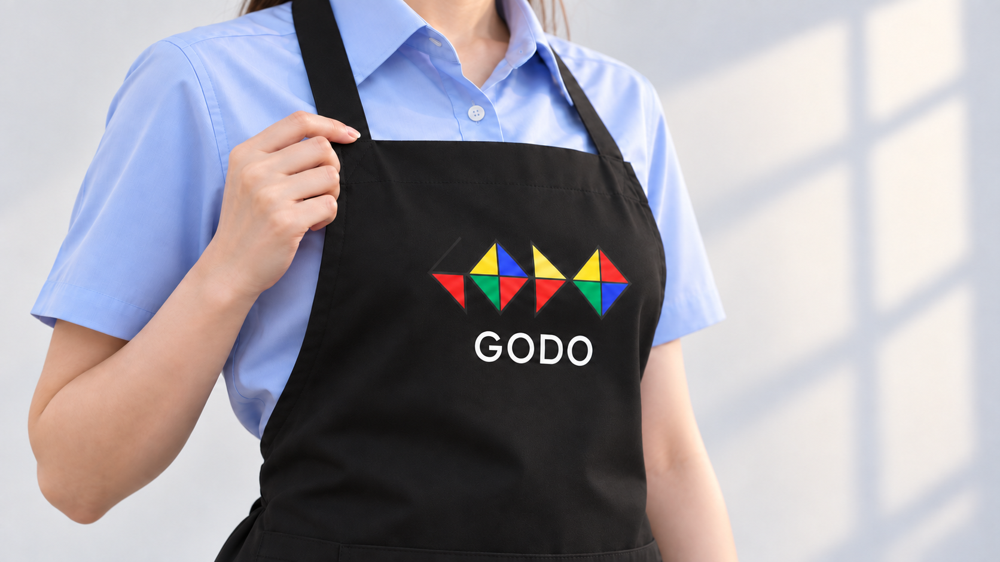
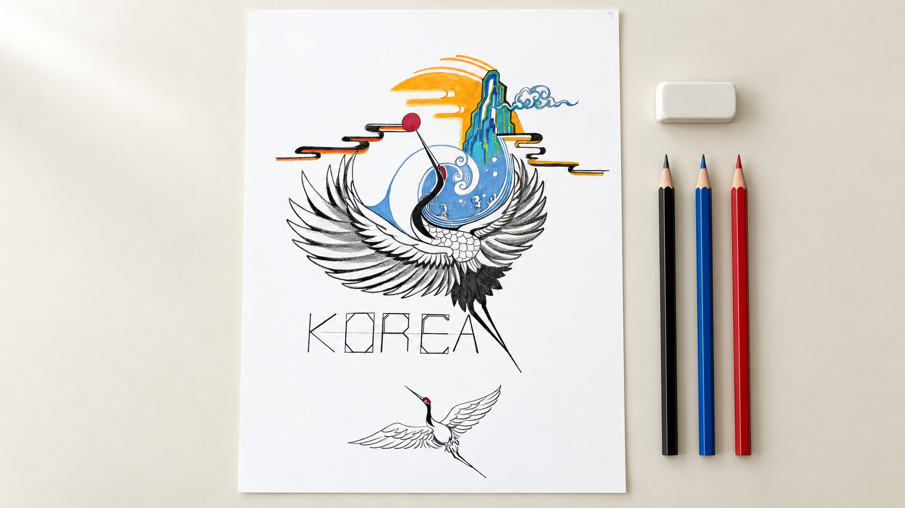

이번 수정02 · 앞치마 윗단을 가볍게 정리양손으로 허리끈을 당기던 장면을 교체했습니다. 한 손으로 목끈이 연결된 윗단을 살짝 정리하고 손을 놓는, 착용 마무리 동작입니다.구도: 가슴 높이 사선 클로즈업 · 손과 로고에 초점동작: 손가락이 윗단에 닿은 상태에서 약 1cm 정리한 뒤 놓음. 큰 당김·매듭 묶기·끈 흔들림 없음. 동작 속도는 원본 1배속.
03 · 연필로 첫 선종이에 닿은 흑연 연필로 깃털 윤곽의 짧은 선을 그립니다.구도: 연필 끝과 종이 접점 매크로동작: 짧은 선 한 번. 연필 끝 이동과 흑연 선이 생기는 위치를 일치시킬 것. 감속 없음.
04 · 첫 파란색무채색 밑그림의 파도 안쪽에 파란 색연필로 첫 색을 넣습니다.구도: 파란 심과 채색 영역 초근접동작: 파란 영역 안에서 짧은 채색. 흰색 소용돌이 선을 침범하지 않음. 감속 없음.
05 · 부분 채색부분 채색된 작품을 보여주며 첫 색과 완성작 사이의 과정을 연결합니다.구도: 높은 사선 구도 · 손과 작품에 초점동작: 파란 부분에 작은 채색 동작. 종이·그림·주변 소품 위치 고정. 감속 없음.
이번 수정06 · 완성작 클로즈업으로 마무리인물 뒤에서 작품을 보던 첫 프레임을 삭제했습니다. 완성작을 수직으로 내려다보는 이 한 장면에서 바로 끝냅니다.구도: 수직 탑뷰 · 작품 전체와 KOREA·하단 학이 보이는 고정 구도동작: 카메라 고정. 전진·상승·회전·줌 없음. 손·머리·어깨 등장 없음. 추가 채색이나 마지막 터치 없이 완성작 유지.